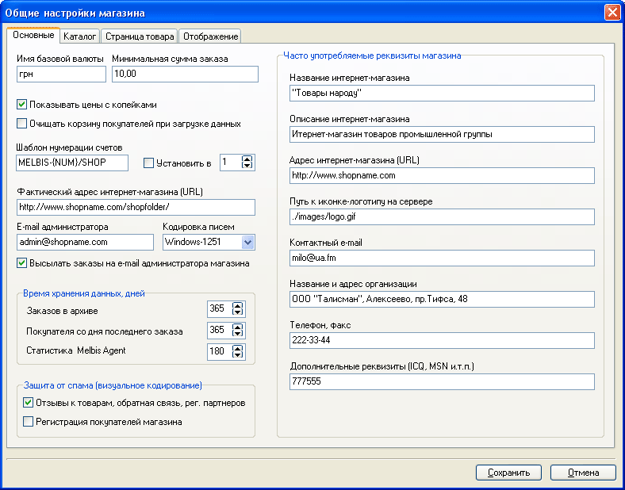
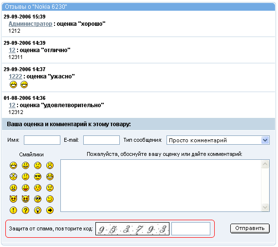
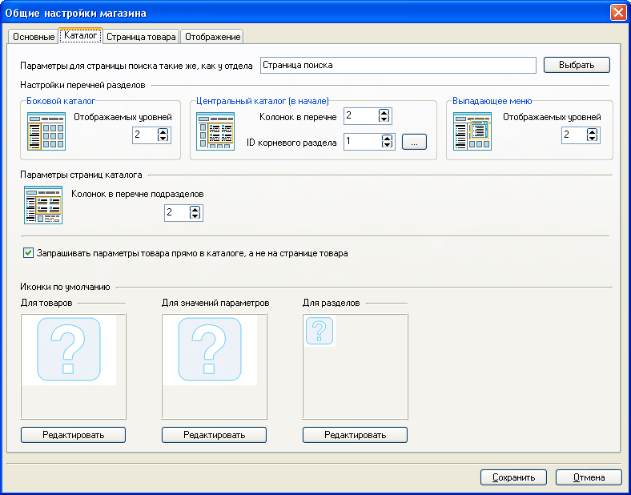
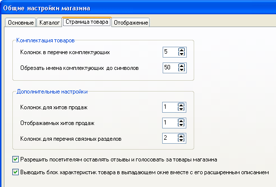

Помимо указания названия магазина и каталога для размещения его данных, задаваемых при создании магазина, для каждого магазина указывается ряд настроек. Вызов окна настроек магазина осуществляется из главного окна программы "Настройки - Общие настройки магазина".
На закладке "Основные" задаются название используемой валюты, минимальная сумма заказа, фактический интернет-адрес магазина (например, http://www.shopname.com/shop) и ряд других параметров. Помимо того, здесь задаются "Официальные реквизиты магазина" : "Название", "Адрес интернет-магазина" (общая ссылка на магазин или портал, например http://www.shopname.com, в состав которого входит магазин).

В блоке "Защита от спама (визуальное кодирование)" активируется защита от спама для системы отзывов к товарам, формы обратной связи, формы регистрации партнеров и формы регистрации покупателей. Следует отметить, что защиту формы регистрации покупателей необходимо осуществлять только в крайнем случае, так как это влечет за собой сложности из-за которых покупатели не захотят регистрироваться в вашем магазине. После активации защиты, в соответствующих формах появляется блок "Защита от спама, повторите код":

Если в ходе работы магазина обнаруживается, что защита от спама перестала работать, то есть в большом количестве идут отзывы, содержащие рекламный текст, то необходимо заменить изображения цифр, которые находятся в каталоге /images/verify на сервере. Сделать это можно в графическом редакторе, заменив шрифт цифр, а также элемент шума (файл noise.png). Также обязательно обратите внимание на то, чтобы в этом каталоге присутствовал и работал файл .htaccess с инструкциями по защите каталога для доступа по HTTP, проверить это можно поробовав открыть эту папку через браузер, например: http://shop.com/images/verify/. Если все настроено правильно, то появится сообщение "Forbidden".
На закладке "Каталог" задается ряд параметров, включая нижеследующие:

Закладка "Страница товара" позволяет задать настройки отображения комплектации и дополнительные настройки отображения для хитов продаж, сопутствующих товаров, связных разделов ( разделов, в которые входит данный товар). Здесь также задается или исключается возможность покупателям оставлять отзывы и голосовать за товар. Если эта опция задана опция "Выводить характеристики товара в выпадающем окне вместе с его расширенным описанием", то характеристики выводятся в окне, сформированном в формирователе изображений, в противном случае характеристики выводятся на персональной странице товара:
